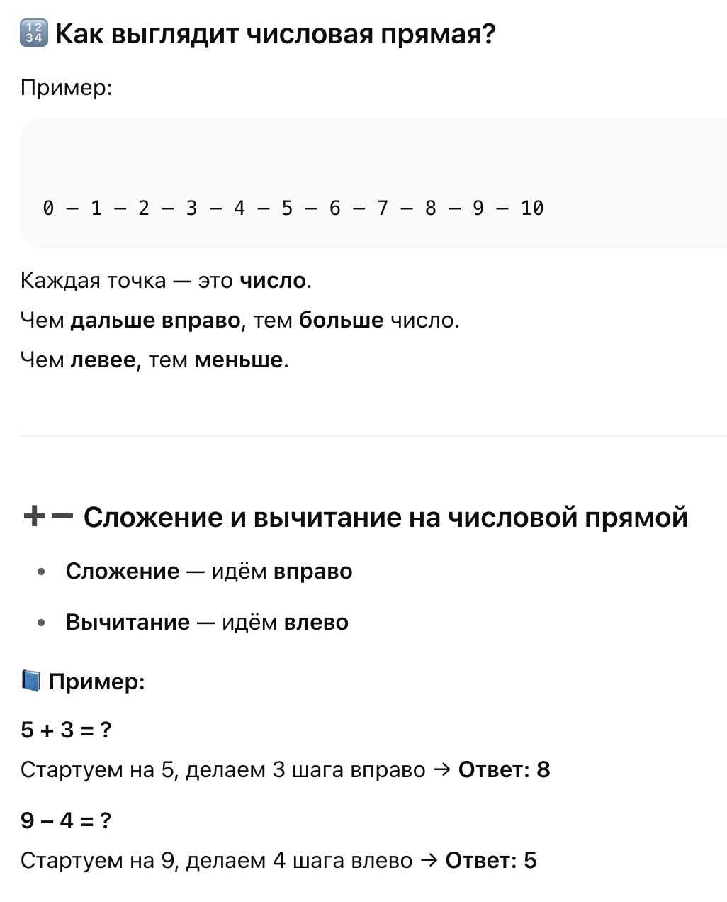

Matematyka > Liczby i obliczenia > Oś liczbowa
📏 Oś liczbowa
(Числовая прямая)
📌 Что это такое?
Oś liczbowa — это прямая линия с отмеченными числами.
Она помогает понять, как расположены числа: что больше, что меньше, как сравнивать и выполнять действия (сложение, вычитание).
Oś liczbowa to prosta, na której zaznaczono zero, kierunek rosnących liczb (zazwyczaj w prawo) i odcinek jednostkowy, który określa odległość między kolejnymi liczbami. Jest to graficzne przedstawienie liczb, używane do ich porównywania i porządkowania.
Elementy osi liczbowej:
- Prosta: Oś liczbowa jest linią prostą.
- Zero: Punkt na osi oznaczający zero.
- Kierunek rosnący: Strzałka wskazująca kierunek, w którym liczby rosną (zazwyczaj w prawo).
- Odcinek jednostkowy: Odległość między kolejnymi liczbami na osi, np. od 0 do 1, od 1 do 2 itd.
- Liczby: Zaznaczone na osi punkty, które reprezentują konkretne wartości liczbowe.

🧠 Зачем нужна числовая прямая?
- Чтобы понять порядок чисел
- Учиться сравнивать числа (что больше, что меньше)
- Решать примеры в уме
- Помогает визуально представить себе сложение и вычитание
📘 Полезные слова (польский – русский):
- oś liczbowa - числовая прямая
- liczba - число
- zaznaczyć - отметить
- dodać - прибавить
- odjąć - вычесть
- większy - больше
- mniejszy - меньше
- kolejność - порядок